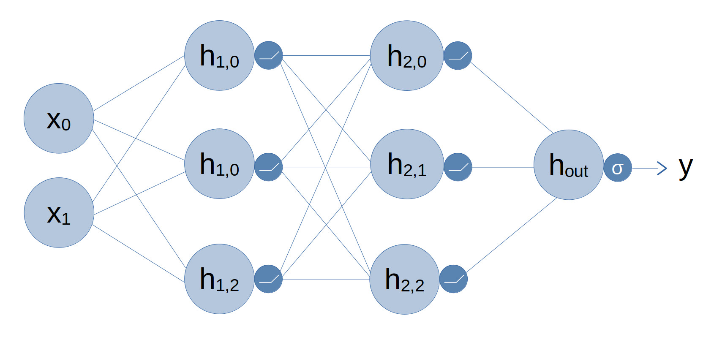

Neural Networks
Neural Networks are the building blocks of all AI models. There are various types of Neural Networks however the fundamentals are mostly the same. The most basic neural network consists of a row of "neurons" which connect an input value to an output. The neuron in the middle stores information which is used to learn a representaion that maps the input to the output.
Neural Networks are "trained" on data to "learn" the optimal values for the parameters in the network. Once fully trained the Neural Network can be given an input that it hasn't seen before and the input is tranformed into a "prediction" by the network. An example is an image classification network that can predict whether an inputted image is of a cat or a dog. The input to the network would be the pixels of the image and the output would be a single decimal number (probability) between 0 and 1 which represents the likelihood of the image being a cat. A trained Neural Network could perform this classification task on images of cats and dogs that were not in the training set.
There are many different types of Neural Networks and they all excel at different tasks. For basic regression and classification type tasks the standard "fully connected" neural network, also know as a Multilayer Perceptron, performs well. They are named as such as they have a number of "layers" of neurons. Each layer consists of a row of neurons and each neuron in the layer is connected to all neurons in the previous layer and the next layer.
The diagram below is an example of a Fully Connected Neural Network (also know as an MLP). Starting from the left we have the inputs denoted as x0 and x1. The next two columns are the "hidden" layers which are denoted by hL,N with L being the layer number and N being the neuron number in that layer. Finally on the right is hout which represents the output of the Neural Network. The final output y is obtained by passing hout through the final activation.
The activation functions are represented by the smaller circles that follow the hidden layers. Activation functions are an important part of Neural Networks as they provide a non-linearity. I like to think of the non-linearity like a buffer between the neurons allowing them to latch a value. Without the non-linearity the hidden layers would simply combine to create a single linear function. In the case of this example there are ReLU activations for the two hidden layers and a Sigmoid activation for the output. I will be going into further details on the various different activation functions in a separate post.

For image-based classiciation tasks a popular model type is the Convolutional Neural Network (CNN). A CNN uses "convolutional" layers rather than layers of neurons. The reason for this is that convolutions are suited to image data. Images are arranged as 2D arrays of pixels and for colour images there are red, green and blue channels. CNNs are able to consider the spatial dimensionality of imgaes and can look at corrlations between adjacent pixels. CNNs can also reduce the spatial dimensionality of an image and compress the information into "latent representaions". These representaions can be thought of as a brief summary of the image contents.
CNNs are very good at identifying small features of an image. For example an with images of faces the network could learn the patterns of facial features such as eyes and ears. CNNs typically use one or more MLP layers after the convolutional layers to perform classiciation or other tasks. These are known as "classification layers".